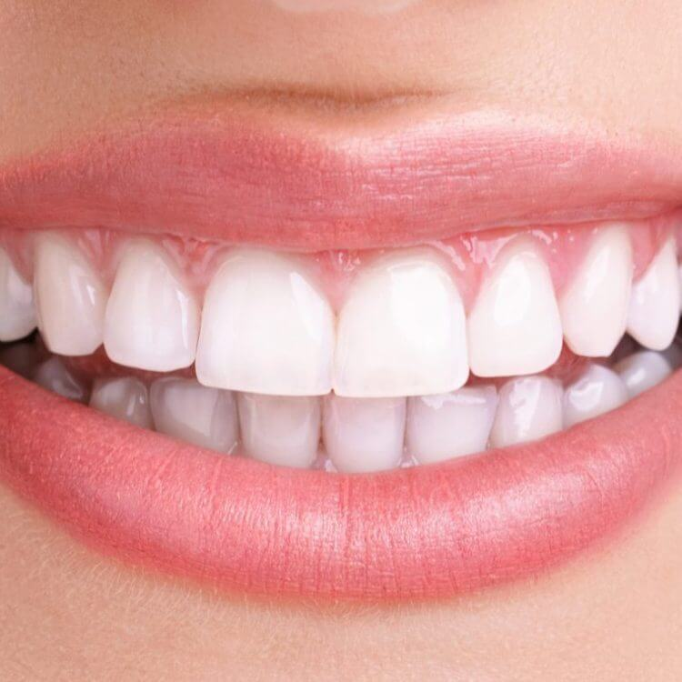
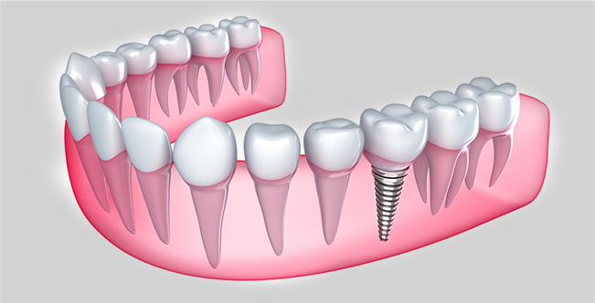
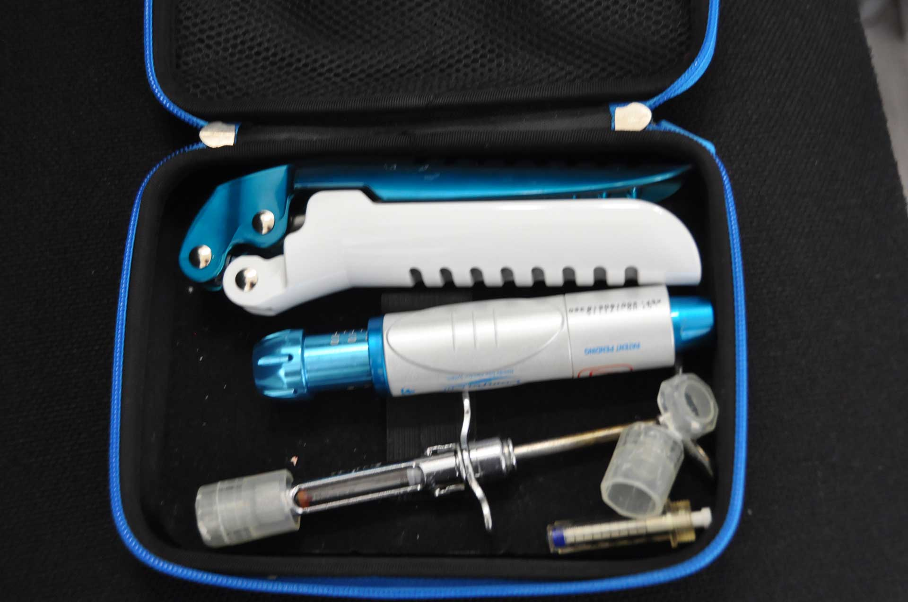
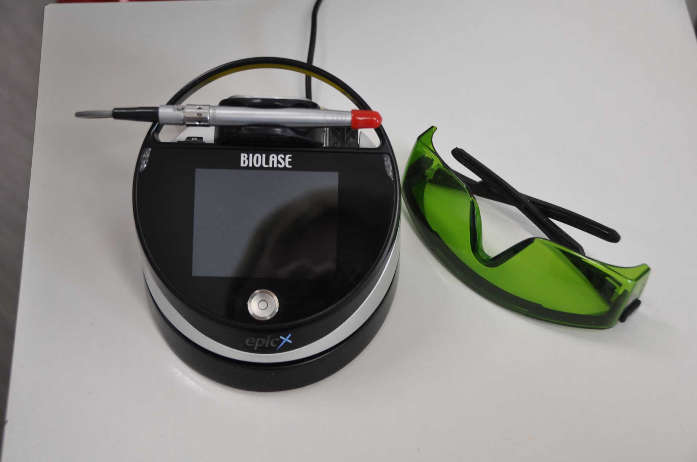
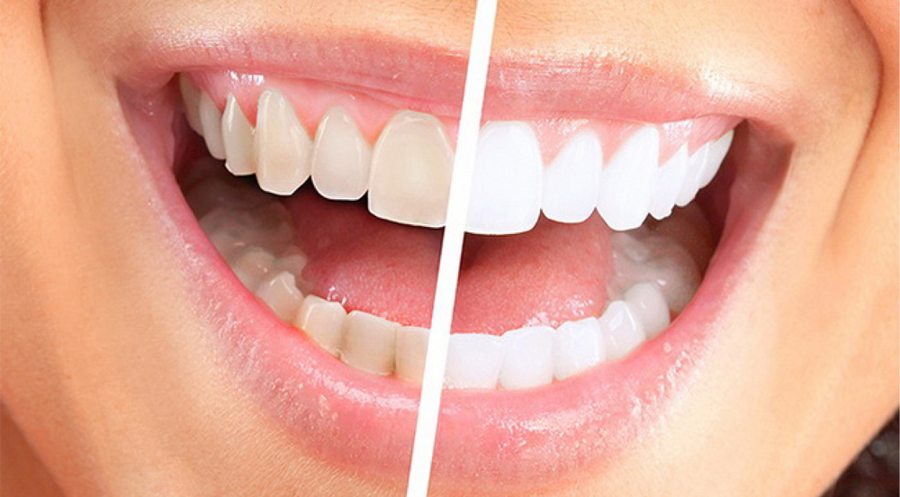
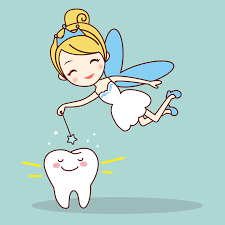
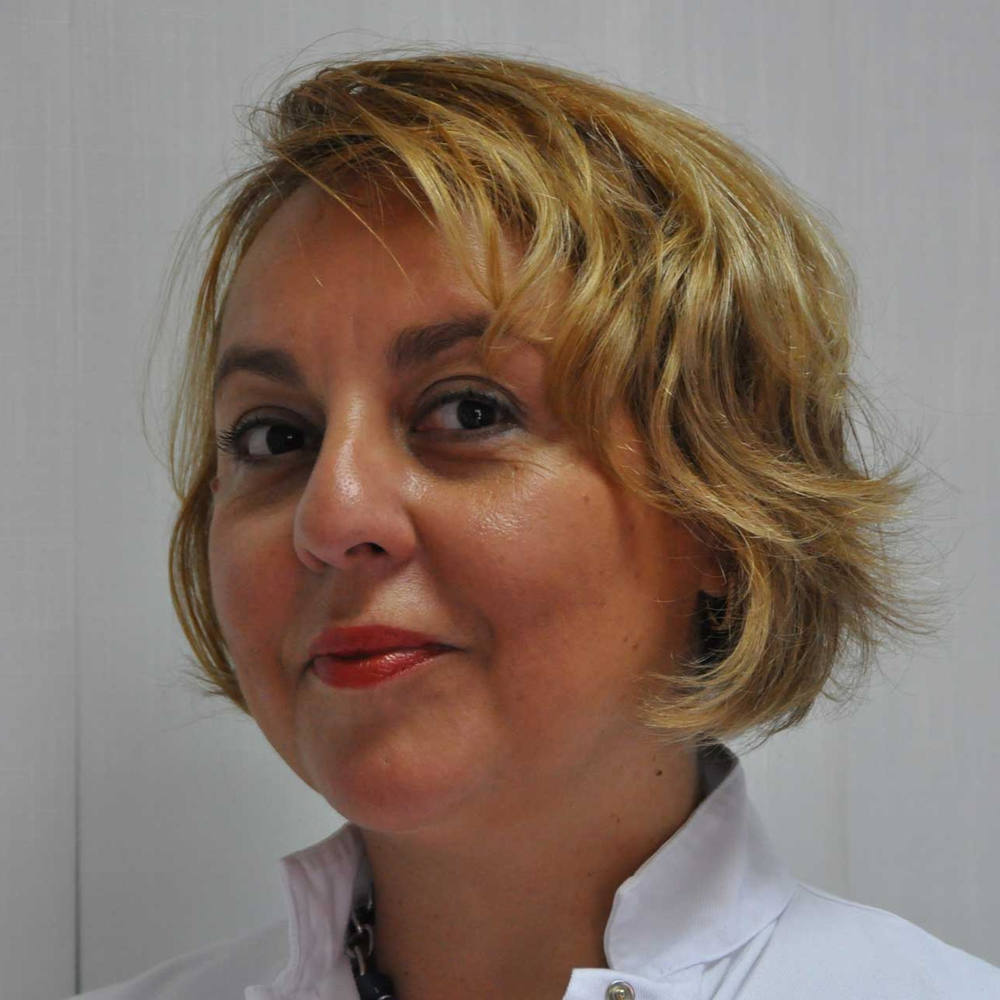
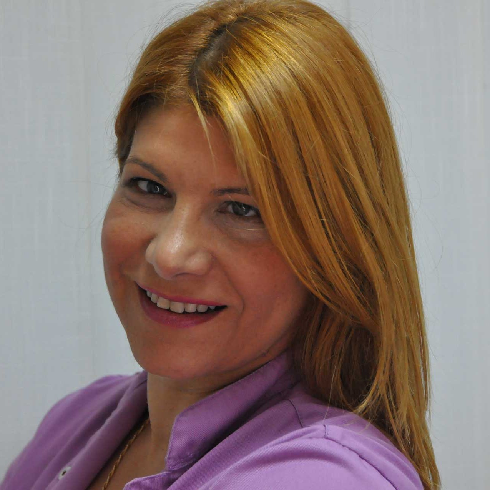

Vaš osmeh je naša briga
Vrhunska stomatološka nega uz najsavremeniju tehnologiju. Gradimo poverenje i stvaramo zdrave osmehe još od 2007. godine.
Tradicija i Kvalitet od 2007.
Stomatološka ordinacija Triodent osnovana je 2007. godine sa vizijom da pacijentima pruži besprekornu stomatološku uslugu u prijatnom i modernom ambijentu. Tokom skoro dve decenije rada, postali smo sinonim za poverenje i stručnost.
Naš fokus je na individualnom pristupu svakom pacijentu, koristeći najsavremenije materijale i opremu renomiranih svetskih proizvođača. Kontinuirano usavršavanje našeg tima garantuje Vam tretmane po najvišim standardima savremene stomatologije.
Naše usluge
Sveobuhvatna stomatološka rešenja na jednom mestu, prilagođena Vašim potrebama i željama.

Protetika
U mogućnosti smo da izradimo sve vrste protetskih radova. Protetske radove izradjujemo u saradnji sa renomiranim tehničarima u najkracem vremenskom roku. U skladu sa estetskim i medicinskim principima izradjujemo: -totalne akrilatne i parcijalene proteze, klasicne, na implantima -skeletirane proteze klasicne, sa klizacima ili drikerima, na implantima, estetski bela skeletirana proteza -bezmetalme krune i mostove -metalokeramičke krune i mostove -veenere- keramičke ili kompozitne

Implanti
U našoj ordinaciji ugrađuju se implanti nemačke kompanije BREDENT koji omogućavaju ugradnju implanata i izradu protetskog rada u roku od jednog do tri dana. Taj koncept je poznat po nazivu KY FAST & FIXED. Impanti omogućavaju izradu protetskih radova velike esteteke vrednosti i potpune rehabilitacije pacijenta.

Anestezija bez igle
Najsavreniji način davanja lokalne anestezije, bez korišćenja igle i šprica obezbedjuje bezbolan rad i izbegavanje nelagodnosti prilikom davanja anestezije.

Laser
Omogućava lečenje bolesti usta i desni po najsavremenijim principima. Velike su mogućnosti lasera i prilikom estetskih zahvata kao sto su belenje zuba i produženje kliničke krune zuba. Laser pomaze za brže i bolje izlečenje gangrenozno inficirane pulpe zuba. A olakšava tegobe kod pojave afti, herpesa na usnama, osteljivosti zuba na nadražaje. Dokazano olakšava bol i tegobe koje su uzrokovane promenama u TM zglobu. Otklanja upalu, krvarenje i infekciju desni a koristi se i za obradu parodontalnog dzepa.

Estetska stomatologija
Rad sa najsavreminijim materijalima i metodama, u našoj ordinaciji,omogućava izradu najboljih estetskih radova: Kompozitne fasete, Keramičke fasete, Bezmetalne krune i mostove, Metalokeramicke krune i mostove, Hibridne proteze, Bezmetalne vizil proteze, Estetske ortodonske bravice(bele), Aligner folije za ispravljanje zuba ,bez nosenja fiksne proteze

Dečija stomatologija
Specijalista decije i preventivne stomatologije brine o zdravlju usta i zuba vase dece ,na bezbolan i prijatan nacin.U nasoj ordinacije rad sa decom je bezbolan jer smo u mogucnosti da damo anesteziju bez upotrebe igle i sprica.Specijalista ortopedije vilica, moze u istoj poseti ,da obavi pregled i da vam misljenje o rastu vilica , polozaju zuba i ortodnoskoj terapiji vaseg deteta.
Upoznajte Naš Tim

Dr. Jelena Mirković
Dr stomatologije, Oralni hirurg, Implantolog
Rođena 31.12.1970 u Beogradu. Posle završenog osnovnog i srednjeg obrazovanja 1989 godine započinje studije na Stomatološkom fakultetu u Beogradu koje je uspešno završila 1995 godine. Potom stažira na Vojno-medicinskoj akademiji(VMA) u Beogradu gde upisuje i specijalističke studije iz Oralne hirurgije koje završava 2003 godine. U tom peridu na odeljenju za Oralnu implantologiju provodi tri meseca. Radno iskustvo započinje u renomiranim privatnim ordinacijama u Beogradu a 2006 godine postaje suosnivač stomatološke ordinacije "Triodent". Stalna edukacija u poljima implanptologije i protetske rehabilitacije bezubih pacijenata u zemlji i inostranstvu. Član stomatološke komore Srbije Član udruženja implantologa Srbije

Dr. Katarina Milosavljević
Specijalista ortopedije vilica
Rodjena 3.05.1970 u Beogradu. Posle završenog osnovnog i srednjeg obrazovanja 1989 godine započinje studije na Stomatološkom fakultetu u Beogradu koje je uspešno završila 1996 godine.Potom stažira i specijalizira Ortopediju vilica na Vojno-medicinskoj akademiji(VMA)od 1997-2001 god. Radno iskustvo stiče u renomiranim privatnim ordinacijama u Beogradu a 2006 godine postaje osnivač stomatološke ordinacije "Triodent". Stalna edukacija u poljima ortopedije vilica,estetske stomatologije i protetike produbljuje na seminarima u zemlji u inostranstvu. Od 2016 godine postaje redovan gostujući stomatolog u Nemačkoj (Altshausen Praxis König &Kollegen) Član stomatološke komore Nemačke Član stomatološke komore Srbije Član udruženja ortodonata Srbije